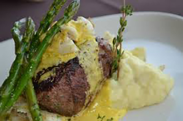

Schultz Steak Sauce
Mrs. Clark's Bernaise Sauce Recipe
Susan Clark, Olympia, WA

A delicious plate featuring grilled steak with creamy sauce, asparagus, thyme, and mashed potatoes, image source https://pxhere.com/en/photo/585878
Ingredients List
- 2 egg yolks
- 1 stick of butter (1/2 cup)
- 2 T tarragon vinegar
- 1 t salt
Equipment List
Directions
- Heat butter in sauce pan until slightly hot.
- Pour egg yolks, not beaten, into blender.
- Add tarragon vinegar and salt to egg yolks in blender.
- Cover blender with lid.
- Turn blender to low speed.
- Slightly lift lid and slowly drizzle butter into egg yolk using a paper towel to cover the top so the sauce won't splatter.
- Pour finished sauce into bowl and serve with steak, asparagus, anything you want.
This page created as academic activity only.